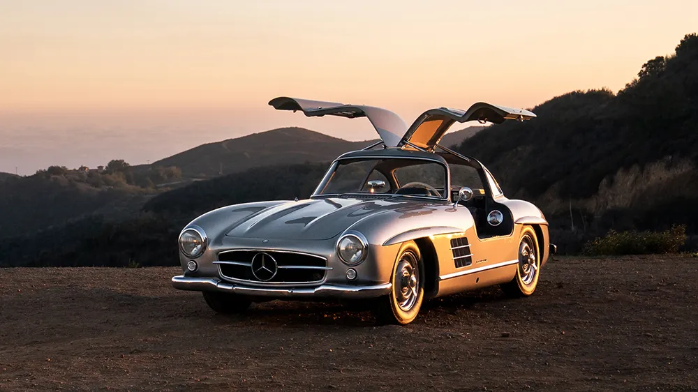
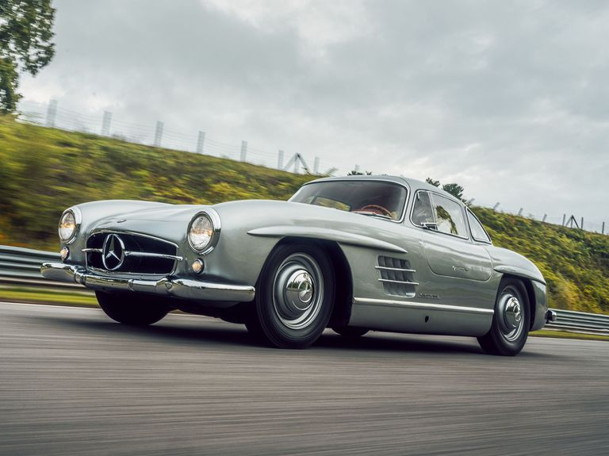

The Mercedes-Benz 300SL Gullwing is an automotive masterpiece that transcends time, combining stunning design, groundbreaking engineering, and exhilarating performance into a single iconic package. Introduced in the 1950s, it remains a symbol of automotive excellence and innovation. Its most striking feature, the upward-opening "gullwing" doors, instantly distinguish the 300SL and contribute to its timeless allure. Paired with its sleek, aerodynamic bodywork and prominent grille, the Gullwing exudes a sense of elegance and aggression that captivates onlookers even today.
Beneath the hood lies a pioneering powerplant—a fuel-injected, inline-six engine that was revolutionary for its time. With 215 horsepower on tap, the 300SL offered blistering performance, making it one of the fastest production cars of its era. The 300SL Gullwing's success on the racetrack further solidified its legendary status, with victories at prestigious events like the 24 Hours of Le Mans and the Carrera Panamericana. Its racing pedigree not only showcased its performance capabilities but also cemented its reputation as a true driver's car.
Beyond its performance prowess, the 300SL Gullwing boasts a luxurious interior appointed with high-quality materials and innovative features, offering both comfort and sophistication to its occupants. As one of the most coveted and collectible Mercedes-Benz models ever produced, the 300SL Gullwing continues to inspire enthusiasts and collectors alike, serving as a timeless reminder of the brand's commitment to excellence and innovation in the world of automotive engineering.